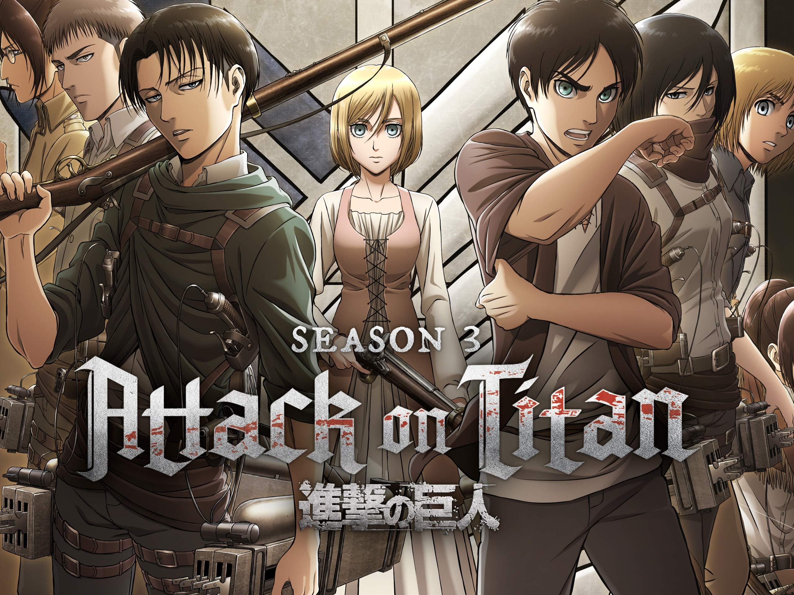

Animation in Japan began in the early 20th century.
Attack on Titan (Japanese: 進撃の巨人, Hepburn: Shingeki no Kyojin) is a Japanese dark fantasy anime television series adapted from the manga of the same name by Hajime Isayama that premiered on April 7, 2013. It has aired on NHK General TV in Japan, Aniplus Asia in various Asia-Pacific countries,and streamed on Crunchyroll, Funimation, Prime Video, and Hulu in Canada and the United States.
The story begins in a world where the remains of humanity live inside three concentric cities, each protected by enormous walls against attacks by Titans, gigantic humanoid beings who devour humans without any apparent reason. It follows the adventures of Eren Jaeger, his friends Mikasa Ackerman and Armin Arlert, whose lives are changed forever after a Colossal Titan breaches the wall of their home town. Vowing revenge and to reclaim the world from the Titans, Eren and his friends join the Scout Regiment, an elite group of soldiers who fight against Titans.
So many Animes Fans
Produced by IG Port's Wit Studio and directed by Tetsurō Araki, Attack on Titan was broadcast on MBS TV from April 7, 2013 to September 29, 2013, and later aired on Tokyo MX, FBS, TOS, HTB, TV Aichi and BS11.[7] The anime had some production issues with needing more animators with Wit Studios' character designer, Kyoji Asano tweeting and looking for active animators to work on the anime.
Both Funimation and Crunchyroll have streamed the series with subtitles on their respective websites.[9][10] Funimation has also licensed the anime for home video release in 2014.[11] Episode 1 of the English version premiered at Anime Boston,[12] with other episodes put on Funimation's subscription services.[13] On television of the series has broadcast weekly on Adult Swim's Toonami block on May 3, 2014, starting at 11:30 p.m. EST.[14] In Australia, the anime aired on SBS 2 on Tuesdays, in Japanese with English subtitles, with the first episode having aired on September 30.[15] The first season was acquired for distribution in the UK by Manga Entertainment.[16] Madman Entertainment acquired the show for distribution in Australia and New Zealand, and streamed the series on Madman Screening Room.

A second season of the anime series was announced on the opening day of the first theatrical film, which was originally set to be released in 2016.It was then confirmed in the January 2017 issue of the Bessatsu Shōnen Magazine that the second season would premiere in April 2017.
Masashi Koizuka directed the second season, with Araki acting as chief director.It ran for 12 episodes from April 1, 2017, to June 17, 2017, on MBS and other television networks.A third compilation film recapping the events of the anime series' second season titled Attack on Titan: The Roar of Awakening (「進撃の巨人」 ～覚醒の咆哮～, Shingeki no Kyojin ~Kakusei no Hōkō~) was released on January 13, 2018.
2020–2022 final season
Upon the airing of the final episode of the third season on July 1, 2019, it was announced that the fourth and final season of the anime series was scheduled for release in Fall 2020 on NHK General.On September 22, 2020, Crunchyroll and Funimation announced that the final season would be streaming "later this year" in 2020.